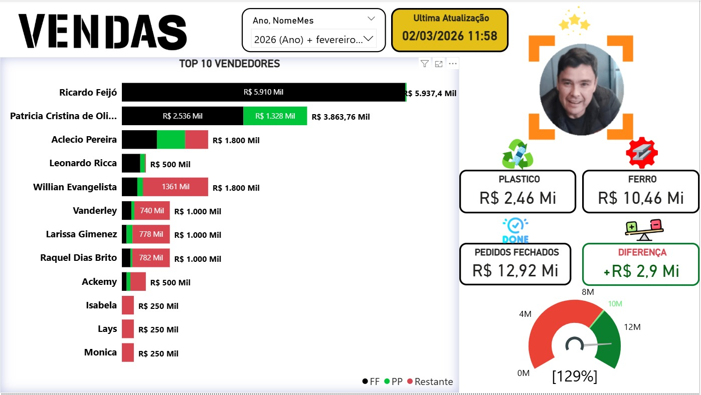
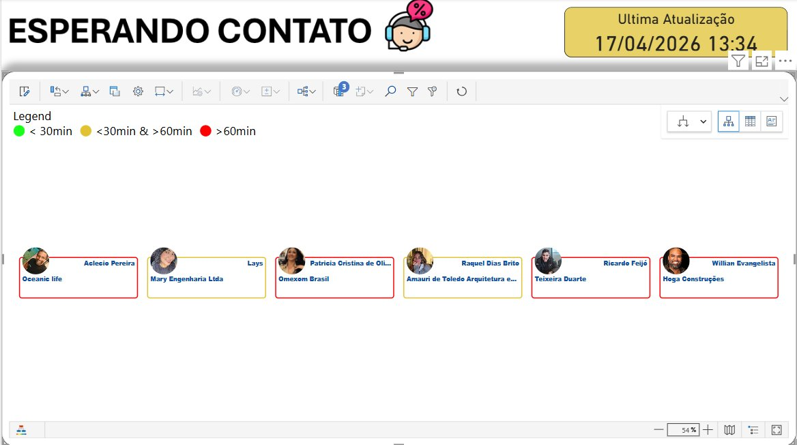
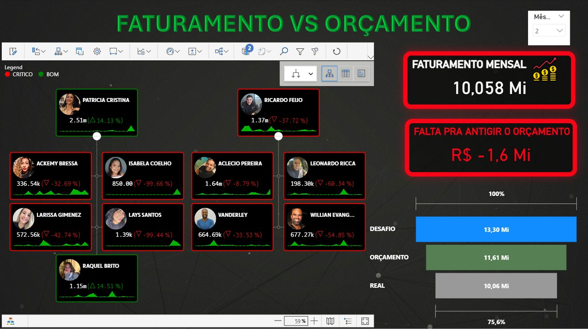
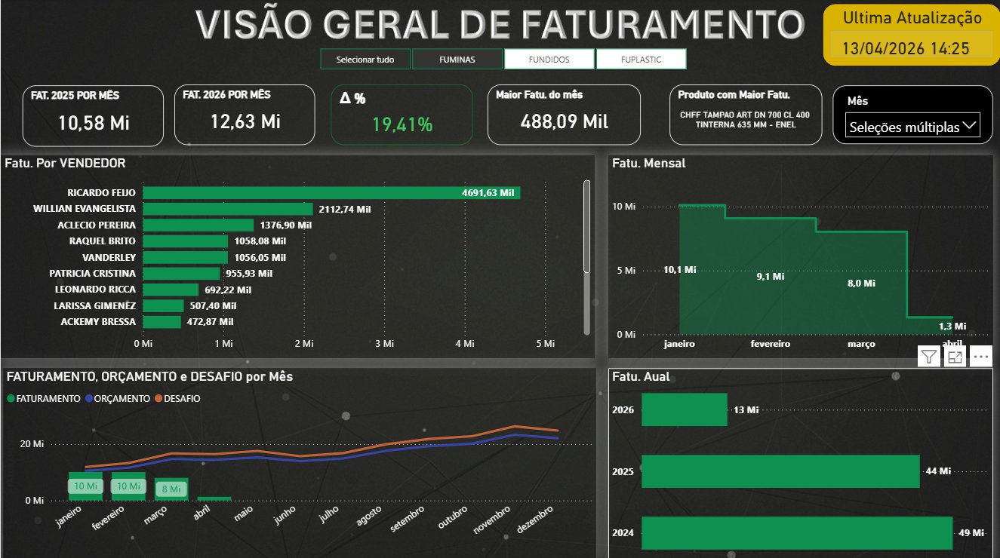

// Data Analyst & BI Engineer — Brazil // Analista de Dados & BI — Brasil
I build automated data systems that connect CRM, ERP, and the people who use them. Specializing in Power BI, Python automation, and API integrations that drive real business outcomes. Construo sistemas de dados automatizados que conectam CRM, ERP e as pessoas que os utilizam. Especializada em Power BI, automação em Python e integrações via API que geram resultados reais.
I'm a Data Analyst based in Brazil, building systems where data does the heavy lifting. My work lives at the intersection of BI and backend automation — real-time dashboards on commercial floor TVs, Python pipelines that keep CRM and ERP in sync, and alerts that catch stalled deals before they go cold.
I hold a PhD in Astrophysics, which shaped how I approach data: rigorous, quantitative, and built for large-scale complexity. I've complemented that with a Certificate in Data Analysis and continuous hands-on work in Power BI, Python, and API integrations.
Since deploying the sales dashboard in July 2025, the company has met or exceeded its monthly target every single month. Working daily with RD Station CRM and TOTVS ERP, integrated via REST APIs and deployed on Heroku.
Sou Analista de Dados no Brasil, construindo sistemas onde os dados trabalham sozinhos. Meu trabalho une BI e automação — dashboards em tempo real em TVs do andar comercial, pipelines Python que mantêm CRM e ERP sincronizados, e alertas que identificam negociações paradas antes que esfriem.
Tenho Doutorado em Astrofísica, o que moldou minha abordagem aos dados: rigorosa, quantitativa e preparada para complexidade em larga escala. Complementei com um Certificado em Análise de Dados e trabalho contínuo com Power BI, Python e integrações via API.
Desde julho de 2025, a empresa atinge ou supera a meta mensal todos os meses. Trabalho diariamente com RD Station CRM e TOTVS ERP, integrados via APIs REST e implantados no Heroku.

Power BI · Live
Displayed on the commercial floor TV, this Power BI dashboard fetches live data from RD Station CRM via API throughout the workday. It shows each salesperson's revenue split by product type (Plastic vs Iron), with color-coded bars tracking fulfilled orders, in-progress deals, and remaining gap to target. The gauge in the corner shows total company achievement vs goal — turning green when surpassed. The top performer's photo is highlighted automatically.
Since going live in July 2025, monthly sales targets have been met or exceeded every month — the dashboard became a daily behavioral anchor for the entire sales team.
Exibido na TV do andar comercial, este dashboard Power BI busca dados ao vivo do RD Station CRM via API ao longo do dia. Mostra a receita de cada vendedor dividida por tipo de produto (Plástico vs Ferro), com barras coloridas rastreando pedidos faturados, em andamento e a lacuna restante até a meta. O velocímetro no canto mostra o desempenho total da empresa — ficando verde quando a meta é superada.
Desde julho de 2025, as metas mensais foram atingidas ou superadas todos os meses — o dashboard tornou-se uma referência diária para toda a equipe.

Power BI · LiveA live dashboard displayed alongside the sales screen on the commercial floor TV. Every unattended incoming lead is shown as a card with the client's name and the responsible salesperson. The card border changes color automatically based on wait time: green under 30 min, yellow between 30 min and 1 hour, red over 1 hour. Continuously refreshed via RD Station API — no manual monitoring needed. Dashboard ao vivo exibido ao lado da tela de vendas na TV do andar comercial. Cada lead recebido sem atendimento aparece como um card com o nome do cliente e o vendedor responsável. A borda do card muda de cor automaticamente com base no tempo de espera: verde menos de 30 min, amarelo entre 30 min e 1 hora, vermelho mais de 1 hora. Atualização contínua via API do RD Station.

TOTVS API · StrategicA comprehensive management dashboard connected to TOTVS ERP via API. Shows year-over-year billing comparison (2025 vs 2026), monthly trend, best-selling product, and each salesperson's contribution. Fully interactive — clicking a salesperson shifts the entire view from company-level to individual analysis, showing personal billing vs budget and challenge target. Built to support strategic decisions around team structure, product mix, and target-setting. Dashboard gerencial completo conectado ao TOTVS ERP via API. Mostra comparação de faturamento ano a ano (2025 vs 2026), tendência mensal, produto mais vendido e contribuição de cada vendedor. Totalmente interativo — clicar em um vendedor muda toda a visualização do nível da empresa para análise individual, mostrando faturamento pessoal vs orçamento e desafio. Construído para apoiar decisões estratégicas sobre equipe, mix de produtos e definição de metas.
A motivational performance dashboard displayed on the commercial floor TV, pulling real-time billing from TOTVS ERP. Each salesperson has a card showing their photo, current billing total, and a sparkline with percentage change vs the previous period (▲ growing / ▽ below). Cards are color-coded: red border while working toward the target, green border once the personal goal is hit.
The right panel benchmarks the whole company against three thresholds — budget, challenge, and actual — with a live progress bar. This makes the company's overall financial position visible to everyone in real time, creating shared accountability and driving performance.
Dashboard motivacional de performance exibido na TV do andar comercial, com faturamento em tempo real do TOTVS ERP. Cada vendedor tem um card com foto, total faturado atual e um sparkline com variação percentual vs período anterior (▲ crescendo / ▽ abaixo). Os cards são coloridos: borda vermelha enquanto trabalha para a meta, borda verde quando a meta individual é atingida.
O painel direito compara a empresa com três referenciais — orçamento, desafio e real — com barra de progresso ao vivo. Isso torna a situação financeira da empresa visível a todos em tempo real, criando responsabilidade compartilhada e impulsionando a performance.

Power BI · TOTVS API
A sales assistant used to spend several hours every day manually checking deal by deal — comparing a Google Sheet of TOTVS orders against RD Station to spot value or status mismatches. This Python script replaced that entirely.
It runs automatically on a Heroku scheduler, fetches every deal from RD Station via paginated API, builds a number-keyed lookup, and cross-references each row in the source sheet — writing OK, DIVERGE | RD: X | TOTVS: Y, or Not Found directly back into Google Sheets in seconds. By the time the assistant starts her day, the results are already there. Handles Brazilian number formatting (R$ 1.234,56), OAuth2 token rotation, and batch writes for speed.
Uma assistente comercial passava várias horas por dia verificando negociação por negociação — comparando uma planilha de pedidos do TOTVS com o RD Station para encontrar divergências de valor ou status. Este script Python substituiu esse processo completamente.
Ele é executado automaticamente pelo agendador do Heroku, busca todas as negociações do RD Station via API paginada, cria um mapa por número de pedido e cruza cada linha da planilha de origem — gravando OK, DIVERGE | RD: X | TOTVS: Y ou Não encontrada diretamente no Google Sheets em segundos. Quando a assistente começa o dia, os resultados já estão prontos. Trata formatação brasileira (R$ 1.234,56), rotação de token OAuth2 e gravações em lote.
Selected Python scripts from production — all available on GitHub ↗ Scripts Python em produção — todos no GitHub ↗
Handles RD Station's rolling refresh token — stores locally or on Heroku /tmp, auto-updates Heroku config vars on token rotation. No manual re-auth ever needed.Gerencia o refresh token rotativo do RD Station — local ou Heroku /tmp, atualiza config vars automaticamente. Sem re-autenticação manual.
Fetches open sales orders from TOTVS ERP and automatically creates the corresponding deals in RD Station CRM — so salespersons never have to enter the same data twice. Handles organization lookup with fuzzy matching, contact creation, product mapping, duplicate detection via Google Sheets, and sends a full sync report by email after each run.Busca pedidos de venda abertos no TOTVS ERP e cria automaticamente as negociações correspondentes no RD Station CRM — eliminando o trabalho duplo dos vendedores. Gerencia busca de organizações com correspondência aproximada, criação de contatos, mapeamento de produtos, detecção de duplicatas via Google Sheets e envia um relatório completo por e-mail após cada execução.
Finds stalled deals (30+ days old, 10+ days no update), groups by salesperson, sorts by deal value descending, and sends prioritized HTML emails with direct CRM links via Office365 SMTP.Identifica negociações paradas, agrupa por vendedor, ordena por valor e envia e-mails HTML priorizados com links diretos ao CRM via SMTP Office365.
Open to Data Analyst, BI Engineer, and Data Automation roles — in Brazil or internationally. Aberta a oportunidades de Analista de Dados, BI e Automação — no Brasil ou internacionalmente.